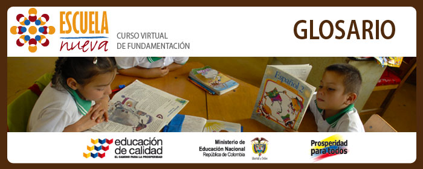

|  | |
| Ambiente de aprendizaje: | |
| Es el espacio, y la disposición del mismo, dónde ocurren los procesos de enseñanza aprendizaje | |
| Aprehensión: | |
| Se refiere a la habilidad de cualificar los conceptos y las nociones a partir de conocimientos previos o de saberes adquiridos. | |
| Competencia: | |
| Característica subyacente en una persona causalmente relacionada con su desempeño y actuación exitosa en un puesto de trabajo. Tomado de Estatuto de Profesionalización Docente, Decreto Ley 1278 de 2002. Artículo 35. | |
| Cualitativo: | |
| Características observables, diferenciadoras no medibles de forma numérica. | |
| Estándares de competencia: | |
| Referentes comunes de los procesos de enseñanza aprendizaje que, entre otras cosas, permiten establecer si tanto estudiantes como docentes cumplen con expectativas explícitas de calidad. Tomado de MEN, 2007. Estándares Básicos de Competencias. Revolución Educativa Colombia aprende. | |
| Estrategia: | |
| Se refiere al conjunto de varias acciones que llevan al alcance de un objetivo claramente establecido antes de la ejecución de las mismas | |
| Lineamientos curriculares: | |
| Marco de referencia para los estándares básicos de calidad; desde allí se generan elementos estructurantes del currículo que orientan la organización de los ejes de los estándares con un enfoque de competencias y desempeños de los estudiantes. Adaptado de Colombia aprende. Recuperado 03 de agosto de 2011. http://www.colombiaaprende.edu.co/html/docentes/1596/article-73400.html | |
| Metodología: | |
| Se refiere al conjunto de acciones que se suceden a una serie de principios estructurados dentro de una propuesta y que permitirán ponerlos en práctica. | |
| Modelos educativos flexibles: | |
| Son apuestas pedagógicas que buscan atender las condiciones particulares de los contextos sociales, culturales y económicos donde habitan los niños, de tal manera que la escuela se adapte a la realidad garantizando la permanencia y pertinencia de la oferta educativa. Estos modelos están diseñados con estrategias escolarizadas y semi-escolarizadas, procesos convencionales y no convencionales de aprendizaje, metodologías flexibles, diseño de módulos con intencionalidad didáctica, articulación de recursos pedagógicos, desarrollo de proyectos pedagógicos productivos que a través de la formación de docentes y el compromiso comunitario, fortalecen el ingreso y retención de la población en el sistema. Estos modelos se han adaptado para la prestación del servicio educativo, de manera pertinente y diferenciada a un grupo poblacional, dentro de un contexto específico. Los modelos tienen su sustento conceptual en las características y necesidades presentadas por la población a la cual buscan atender y se apoyan en tecnologías y materiales educativos propios. http://www.colombiaaprende.edu.co/html/mediateca/1607/article-85440.html |
|
| Proceso Cognitivo: | |
| Con el propósito de unificar los procesos de enseñanza aprendizaje se consolida una propuesta en un sistema que relacione todos los agentes del proceso educativo. | |
| Sistema educativo: | |
| Con el propósito de unificar los procesos de enseñanza aprendizaje se consolida una propuesta en un sistema que relacione todos los agentes del proceso educativo. | |
| Tábula rasa: | |
| La expresión se refiere a la tesis de que cada ser humano nace con la mente "vacía". | |